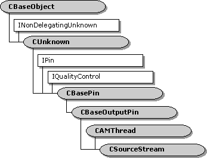

description: The CSourceStream class provides an output pin for the CSource filter class. ms.assetid: 5ccfb129-93e2-4773-9398-5f59f2914ba7 title: CSourceStream class (Source.h) ms.topic: reference ms.date: 4/26/2023 topic_type:
[The feature associated with this page, DirectShow, is a legacy feature. It has been superseded by MediaPlayer, IMFMediaEngine, and Audio/Video Capture in Media Foundation. Those features have been optimized for Windows 10 and Windows 11. Microsoft strongly recommends that new code use MediaPlayer, IMFMediaEngine and Audio/Video Capture in Media Foundation instead of DirectShow, when possible. Microsoft suggests that existing code that uses the legacy APIs be rewritten to use the new APIs if possible.]

The CSourceStream class provides an output pin for the CSource filter class.
For information on using this class, see CSource. This class inherits the CAMThread class, which provides a worker thread for streaming data from the pin. The CSourceStream class implements the following helper methods to send requests to the thread:
The first request to the thread must be Init. The Exit request terminates the thread. In practice, it is not necessary to call any of these methods directly, because the pin's CSourceStream::Active and CSourceStream::Inactive methods call them as needed.
The class also provides several "handler" methods:
These do nothing in the base class, but the derived class can override them.
| Protected Member Variables | Description |
|---|---|
| m_pFilter | Pointer to the filter that contains this pin. |
| Protected Methods | Description |
| OnThreadCreate | Called when the streaming thread is initialized. Virtual. |
| OnThreadDestroy | Called when the streaming thread is about to exit. Virtual. |
| OnThreadStartPlay | Called at the start of the CSourceStream::DoBufferProcessingLoop method. Virtual. |
| Active | Notifies the pin that the filter is now active. |
| Inactive | Notifies the pin that the filter is no longer active. |
| GetRequest | Waits for the next thread request. |
| CheckRequest | Checks if there is a thread request, without blocking. |
| ThreadProc | Thread procedure. Virtual. |
| DoBufferProcessingLoop | Generates media data and delivers it to the downstream input pin. Virtual. |
| CheckMediaType | Determines if the pin accepts a specific media type. Virtual. |
| GetMediaType | Retrieves a preferred media type. Virtual. |
| Public Methods | Description |
| CSourceStream | Constructor method. |
| **~ CSourceStream** | Destructor method. Virtual. |
| Init | Initializes the streaming thread. |
| Exit | Signals the streaming thread to exit. |
| Run | Signals the streaming thread to run. |
| Pause | Signals the streaming thread to become active. |
| Stop | Signals the streaming thread to stop. |
| Pure Virtual Methods | Description |
| FillBuffer | Fills a media sample with data. |
| IPin Methods | Description |
| QueryId | Retrieves an identifier for the pin. |
| Requirement | Value |
|---|---|
| Header | Source.h (include Streams.h) |
| Library | Strmbase.lib (retail builds); Strmbasd.lib (debug builds) |